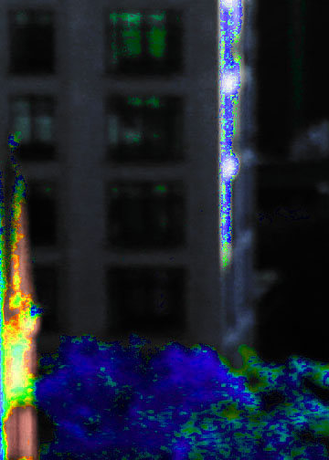

Here is the second image for Homework 2:
This image is from the sky bridge between the west and east buildings. I felt it would not be Hunter without the captivating view (although it is cropped quite a bit). Here, I lowered the curve while giving it some saturation. I also increased the vibrance while lowering the brightness.